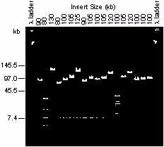
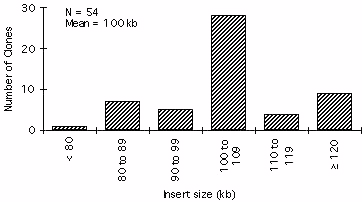

Construction and characterization of a bacterial artificial chromosome library of Arabidopsis thaliana
Sangdun Choi, Robert A. Creelman, John E. Mullet, Rod A. Wing*
Crop Biotechnology Center
Texas A&M University
College Station, TX 77843
*author for correspondence
email address: rodwing@tam2000.tamu.edu
Abstract
We constructed an ordered 3,948 clone Arabidopsis BAC library. The library has a combined average insert size of 100 kb (n=54). Assuming a haploid genome size of 100,000 kb, the BAC library contains 3.95 haploid genome equivalents with a 98% probability of isolating a specific genomic region. The library was screened with five Arabidopsis cDNA probes and one tomato probe and all probes hybridized to at least one (in most cases three) BAC clones in the library.
Introduction
The technique of chromosome walking provides a means of cloning any gene identified by mutational analysis. Arabidopsis thaliana is the best plant system to utilize this technique because of its small genome size, low repetitive DNA content, availability of a dense genetic map and existence of a large number of mapped probes. In order to facilitate chromosome walking, libraries of the Arabidopsis genome have been constructed using yeast artificial chromosome (YAC) vectors (summarized in Gibson and Somerville, 1992). The primary advantage of YACs is the potential for cloning large insert sizes (ranging from 100 to 150 kb for A. thaliana "abi1", "U", and "EW" libraries). Despite the successes of the YAC vector cloning system, many problems exist which include chimerism and tedious steps in the manipulation and isolation of YAC insert DNA.Utilizing an F factor derived cloning system, bacterial artificial chromosome (BAC) vectors have been used to clone human DNA with inserts as large as 300 kb (Shizuya et al., 1992) and plant (sorghum, Woo et al., 1994; rice, Zhang H.B., S. Choi, S.-S. Woo, R.A. Wing, personal communication) DNA with inserts averaging 157 and 140 kb, respectively. BACs are maintained as single copy plasmids in E. coli and exclude other BAC plasmids from replicating in the same host cell. Advantages of BACs over YACs include lower levels of chimerism and ease of library generation and insert manipulation. Techniques also exist to isolate the proximal ends of fragments inserted into the BAC vector (Woo et al., 1994). In this report, we describe the construction and characterization of an A. thaliana BAC library.
Materials and Methods
Plant Material
Arabidopsis thaliana ecotype Columbia was grown in soil at 22 C under short days (11 h light) for 3 to 5 weeks.
BAC Library Construction and Characterization
Megabase size DNA was prepared from A. thaliana nuclei embedded in agarose microbeads as described (Zhang et al., 1995). Size selection of a HindIII partial digest was carried out in a 1% low melting point agarose gel at 4.0 V/cm with a 5 s pulse for 10 h at 11 C in and ligated to dephosphorylated pBeloBAC11 (Woo et al., 1994). Ligation material was used to transform DH10B (BRL) using a BRL Cell-Porator system (Woo et al., 1994). Transformed cells were resuspended in SOC, incubated at 37 C for one h, and plated onto LB agar containing 12.5 mg/ml chloramphenicol, 0.5 mM IPTG and 40 mg/ml X-Gal. White colonies were transferred to microtiter plates containing LB freezing buffer (Woo et al., 1994), incubated at 37C for 24 h and then stored at -80 C.
Recombinant BAC DNA Isolation, Restriction, and CHEF Analysis
BACs containing A. thaliana DNA were isolated from 5 ml overnight cultures (LB plus 12.5 mg/ml chloramphenicol) using standard alkaline lysis procedures and resuspended in TE. BAC DNA was digested with NotI to free the genomic DNA from the 7.4 kb vector. The digested DNA was separated by electrophoresis in a 1% agarose gel in 0.5x TBE at 11 C using a Bio-Rad CHEF Mapper set at 6 v/cm with a linear pulse time ramping from 5 to 15 s for 16 h.
BAC Library Screening
Hybond N+ filters placed on LB plus 12.5 mg/ml chloramphenicol were innoculated with 3456 BAC clones using a Biomek 2000 Robotics Workstation (Beckman). After 12 to 18 h at 37 C, clonies were lysed and DNA fixed to filters using standard methods (Woo et al., 1994). Prehybridization, hybridization and filter washing were preformed as described (Woo et al., 1994). Probes were obtained using gel purified cDNA inserts labelled using the random primer synthesis procedure.Results and Discussion
We constructed an ordered 3,948 clone Arabidopsis BAC library. The library has a combined average inset size of 100 kb (Figure 1, Figure 2). Assuming a haploid genome size of 100,000 kb, the BAC library contains 3.95 haploid genome equivalents with a 98% probability of isolating a specific genomic region.
Figure 1. Analysis of A. thaliana BAC clones by CHEF. EtBr stained CHEF gel. Lanes 1 and 20 lambda concatemer, lanes 2-19 alkaline lysis minipreps of randomly picked recombinant BAC clones digested with NotI.

Figure 2. Histogram showing BAC insert size distribution from 54 randomly selected recombinant BACs digested with NotI.
To evaluate the BAC library, it was screened with five Arabidopsis cDNA probes and one tomato probe. All probes hybridized to at least one BAC clone in the library. While clone stability has not been evaluated for the Arabidopsis BAC library, in Sorghum and rice BAC clones are extremely stable (Woo et al., 1994; Zhang H.B., S. Choi, S.-S. Woo, R.A. Wing, personel communication). Four Sorghum BAC clones ranging in size from 250 to 315 kb were stable for over 100 generations. In addition, no chimerism was detected using 11 Sorghum BAC clones hybridized to metaphase and interphase Sorghum nuclei (Woo et al., 1994).
Based on considerations of stability, ease of isolation, yield, and size, the Ariabidosis BAC library would seem ideally suited for use in the Arabidoposis genome sequencing project or gene isolation by chromosome walking. Isolation of YAC inserts requires standard megabase DNA isolation, CHEF electrophoresis and gel isolation which may take 3 to 5 days to complete. In addition to low YAC yields, separation of a YAC from endogenous yeast chromosomes may not be possible. In contrast, BAC DNA isolation uses standard plasmid DNA techniques to exploit the ability to separate supercoiled plasmid DNA from bacterial genomic DNA. This rapid separation reduces the time for BAC insert isolation to 1.5 to 2 days, including CHEF analysis.
Acknowledgements
SC and RAC contributed equally in the production of this paper. This research was funded by a USDA NRICGP Grant 37100-9014 to RAC and JEM and USDA NRICGP Grant 9300918 to SC and RAW. We thank H. Shizuya and M. Simon (California Institute of Technology) for pBeloBAC11, S.-S. Woo for programming the Biomek 2000, H.B. Zhang for probing the BAC library with the tomato probe, and A. Kljuic for technical assistance in ordering the library. The library has been deposited at the Laboratory for Crop Genome Analysis, Crop Biotechnology Center, Texas A&M University.
References
Gibson, S.I. and C. Somerville. 1992. Chromsome walking in Arabidopsis thaliana using yeast artificial chromosomes. In: Methods in Arabidopsis research. (eds. Koncz, C. N.-H. Chua, J. Schell) World Scientific, Singapore. pp 119-143.Shizuya, H. B. Birren, U.-J. Kim, V. Mancino, T. Slepak, Y. Tachiiri and M. Simon. 1992. Cloning and stable maintenance of 300-kilobase-pair fragments of human DNA in Escherichia coli using an F-factor-based vector. Proc. Natl. Acad. Sci. 89:8794-8797.
Woo, S.-S., J. Jiang, B.S. Gill, A.H. Paterson, R.A. Wing. 1994. Construction and characterization of a bacterial artificial chromosome library of Sorghum bicolor. Nucleic Acid Res. 22:4922-4931.
Zhang, H.-B., Z. Zhao, X. Ding, A. H. Paterson and R.A. Wing. 1995. Preparation of megabase-size DNA from plant nuclei. Plant J. 7:175-184
 Return to Contents Page: Weeds World Vol2(i)
Return to Contents Page: Weeds World Vol2(i)